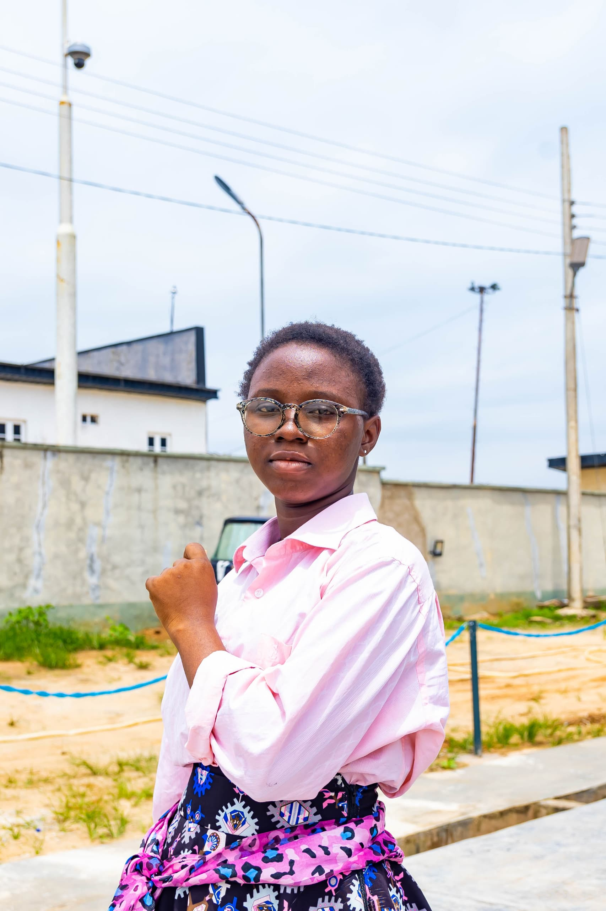

Welcome to WDD 130
Welcome to my WDD 130 Website
Hi i am fondly called Fiyinfoluwa, I am a of WDD 130. I am a web developer and I love to create beautiful websites. I am passionate about web development and I am always looking for new challenges. I am currently learning HTML, CSS, and JavaScript. I am also interested in learning about web design and user experience. I hope to become a professional web developer in the future.
My name is Taiwo Peace Fiyinfoluwa, and I am a passionate, ambitious, and growth-oriented individual with a strong interest in technology, creativity, leadership, and personal development. I am currently pursuing my academic journey through BYU-Pathway Worldwide, where I am committed to academic excellence, continuous learning, and developing the skills needed to make a meaningful impact in my chosen career. I have a growing background in Software Development , with interests in Python programming, JavaScript, React.js, React Native, HTML, CSS, and modern web technologies. I enjoy learning how technology works, solving problems, building digital solutions, and turning ideas into practical projects. Beyond technology, I have a creative side. I have approximately two years of experience serving in a church media team, where I have developed an interest in media production, video editing, communication, and teamwork. I enjoy using creativity and technology to communicate messages and make a positive difference. I consider myself a lifelong learner who values discipline, consistency, faith, and personal responsibility. I believe in making steady progress rather than rushing the process. My philosophy is simple. No rush, Slow, and productive. My long-term aspiration is to become a well-rounded professional who combines technical knowledge, creativity, leadership, and strong interpersonal skills to solve problems, create opportunities, and contribute positively to society. Above all, I am someone who believes in growth, purposeful living, and using the talents and opportunities God has given me to make a difference.
